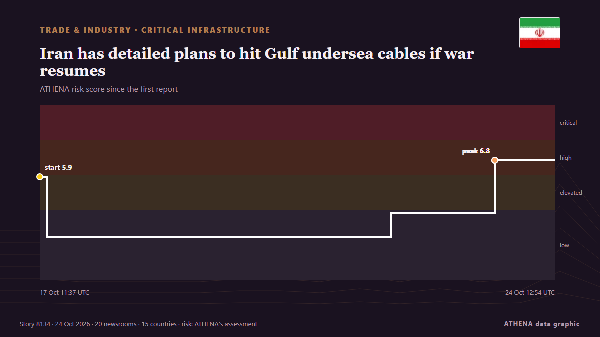

Iran has detailed plans to hit Gulf undersea cables if war resumes

Undersea cables carry around 99% of global internet traffic. from SABC News
Reported independently by 20 outlets in 15 countries since 16 Oct, first by Shafaq News (English); coverage is fading. ATHENA rates the risk high (6.7/10), driven mainly by the severity of the harm described and its geographic and sector reach. Confidence is 87% (high), with 20 independent outlets corroborating it and an average source reliability of 76%. Newsrooms by country: Iraq (2), Iran (2), Kuwait (2). Coverage: 16 Oct to 24 Oct, 190 hours.
Why it matters: Disruption to trade, industry or infrastructure travels along supply chains, changing costs and delivery times far away.
What changed: 14 new reports from 14 newsrooms in the 24 hours to 24 Oct.
At a glance
Selected, scored and written by ATHENA's published methodology. No editor intervenes in individual events. How this is produced ›
| 16 Oct 14:30 UTC | 1 |
|---|---|
| 17 Oct 02:30 UTC | 1 |
| 17 Oct 14:30 UTC | 0 |
| 18 Oct 02:30 UTC | 0 |
| 18 Oct 14:30 UTC | 0 |
| 19 Oct 02:30 UTC | 0 |
| 19 Oct 14:30 UTC | 1 |
| 20 Oct 02:30 UTC | 1 |
| 20 Oct 14:30 UTC | 0 |
| 21 Oct 02:30 UTC | 2 |
| 21 Oct 14:30 UTC | 0 |
| 22 Oct 02:30 UTC | 2 |
| 22 Oct 14:30 UTC | 0 |
| 23 Oct 02:30 UTC | 1 |
| 23 Oct 14:30 UTC | 11 |
| 24 Oct 02:30 UTC | 3 |
| 17 Oct 11:37 UTC | 5.9 |
|---|---|
| 17 Oct 13:56 UTC | 2.5 |
| 22 Oct 07:05 UTC | 3.8 |
| 23 Oct 17:14 UTC | 6.8 |
| 24 Oct 12:54 UTC | 6.7 |
Why these numbers
Importance
Risk
Confidence
The reporting — who reported it, and when
headline as published · opens the original- Shafaq News (English) · IraqIran’s undersea cable threat raises risks for Iraq
- Mehr News (English) · IranPersian Gulf Internet, AI Infrastructures within Iran’s reach
- Arab Times · KuwaitIranian Regime Threatens to Cut Undersea Internet Cables, Strike Gulf Data Centres and AI Facilities
- NEWS.am (English) · ArmeniaIran's Islamic Revolutionary Guard Corps threatens to strike underwater internet cables in Strait of Hormuz
- Oman Observer · OmanIran threatens to attack undersea internet cables in Strait of Hormuz
- Iran International (English) · IranIRGC threatens undersea cables, but can it disrupt global internet?
- Shafaq News (English) · IraqGulf cable threats could boost Iraq’s internet transit role
- Al-Monitor · United StatesWhat Iran’s threats to Hormuz internet cables mean for Gulf
- Express Tribune · PakistanIran has detailed plans to hit Gulf undersea cables if war resumes, officials say
- The Straits Times · SingaporeIran has detailed plans to hit Gulf undersea cables if war with US and Israel resumes, officials say
- Cyprus Mail · CyprusIran has detailed plans to hit Gulf undersea cables if war resumes, officials say
- The New Arab · INTIran has plans to hit Gulf undersea cables if war resumes
- Middle East Eye · INTIran has plans to target Gulf undersea cables if attacked again, officials say
- Al-Monitor · United StatesIran has detailed plans to hit Gulf undersea cables if war resumes, officials say
- The Jerusalem Post · IsraelIran threatens to sever Gulf internet cables in retaliation if US, Israel renew attacks
- SABC News · South AfricaIran has detailed plans to hit Gulf undersea cables if war resumes
- Arab Times · KuwaitIran Threatens to Target Undersea Internet Cables if US, Israel Resume Strikes
- Haaretz (English) · IsraelIran has plans to hit Gulf undersea cables if war resumes, officials say
- CNA (Channel NewsAsia) · SingaporeIran has detailed plans to hit Gulf undersea cables if war resumes, officials say
- NDTV · India"Don't Play With Fire": Iran Warns Of Undersea Cable Attacks If War Resumes
- Gulf News · United Arab EmiratesStarlink vs submarine cables: Can satellites keep the internet running when cables break?
- The Daily Star — page reader · BangladeshIran has detailed plans to hit Gulf undersea cables if war resumes, officials say
- Türkiye Today · TurkeyIran readies plans to target Gulf undersea cables if US, Israel strike again